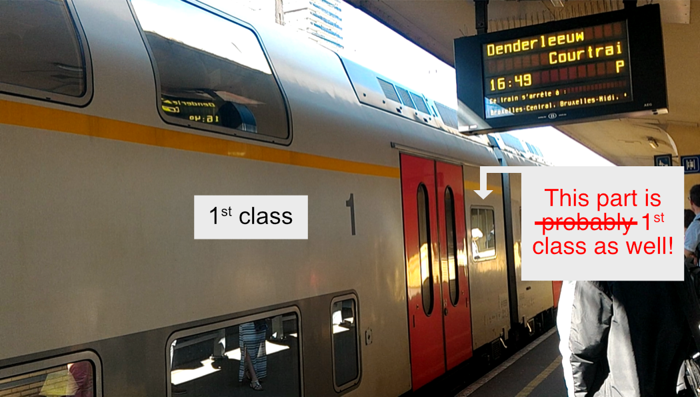

As you can see, these pages have not been updated for 2023. (Except for an added section on the DeutschlandTicket.) Things are slightly different, but not too different from the situation in 2022. I will make updates for 2024!
Travelling around Benelux by train: general tips
Greetings! Here are some things that I have learnt about train travel in/to/from/through Benelux (Belgium, Netherlands, and Luxembourg). Belgium opened the first steam passenger railway in Continental Europe in 1835, followed by the Netherlands in 1839, and Luxembourg in 1845. The three countries have well developed railway networks, connecting the vast majority of towns and cities. Within Benelux, rail is the fastest way to travel between many larger cities.
Included in this page are tips on train travel in Benelux in general, and also some tips on neighbouring France and Germany. There are also separate pages for country-specific tips on the Netherlands, Belgium, and Luxembourg, which can be accessed via the menu buttons. Below are network maps I have drawn for the regular passenger train services in Benelux and Nord-Pas-de-Calais (Far-Northern France) in 2022. Due to the complexity of the networks, especially that of Belgium, I have opted to present the Benelux network in nine separate maps instead of one. Thereafter the train network of Nord-Pas-de-Calais is presented in three maps. (Click on the thumbnails to open the pdf's.)
InterCity, high-speed, and other long-distance rail network in Benelux: (A1 portrait)
weekdaysweekend and public holidays
Local train network in the Netherlands: (A1 portrait)
weekdaysweekend and public holidays
Nachtnet in the Netherlands (domestic night train services): (A4 landscape)
Regular local train network in Belgium and Luxembourg: (A1 landscape)
weekdaysweekend and public holidays
Supplementary train network in Belgium: (A1 landscape)
weekday P trainsSunday P trains
Maps of the TER (Transport express régional) train network in the French departments of Nord and Pas-de-Calais. See also below for some explanations. (A2 landscape)
weekdaysSaturdaySunday and public holidays
Here are videos of the types of passenger rail services in Benelux that I took in 2018:
The 'domestic' sites are for train travel within their respective countries, and the 'international' sites are for international train travel. There are multiple railway companies running domestic train services in the Netherlands and Luxembourg; the domestic sites of NS and CFL can handle any regular train journeys within their countries, even on services not run by them. With international train travel, different companies can give different prices for the same international journey, so it is worth checking the booking websites of the various countries. For international journeys that involve train changes, it is worth comparing the price of making one booking for the entire journey, versus dividing the journey into various bookings.
Do I have to book early for the best price?
Domestic public transport within Luxembourg is zero-fare, except for first class train travel. Otherwise:
Yes, book as early as possible. Dynamic pricing, on basically all high-speed rail services, IC/EC in Germany, Nightjet, and Intercités in France. (The ticket price for immediate deparature can range from very expensive to still quite cheap, depending on the level of demand):
Eurostar: high-speed London – Lille – Brussels – Rotterdam – Amsterdam, London – Paris, etc.
Thalys: high-speed Paris – Brussles – Netherlands / Germany, etc.
IZY: low-cost Paris – Brussels, half on high-speed rail, half on conventional rail.
OUIGO: low-cost high-speed France domestic (low cost TGV).
TGV inOUI: high-speed Brussels – France (not central Paris), Luxembourg – France, France domestic, etc. (normal TGV)
Intercités: non-high-speed long-distance France domestic.
ICE (high-speed), IC or EC (non-high-speed) in/from/to/through Germany (the umbrella term for these in German is Fernverkehr 'long-distance traffic').
Flixtrain: low-cost long-distance Germany domestic. (Private company; operated by Flixbus.)
Nightjet: sleeper train Belgium / Netherlands – Germany – Austria / Switzerland, etc.
Yes, book early. Fixed discount prices, limited supply:
The P'tits Prix tickets by TER Grand Est (northeastern France). There seems to be very few of them. You are restricted to a particular train service. Available between 31 days and 2 days before departure (if it hasn't run out).
The Prix Cassés tickets by TER Hauts de France (far-northern France). There are two separate lots: one lot for TER services (including TGVAUT services), and one lot for the TERGV services. There is a route and date on the ticket, but you are not restricted to a particular service on that date. On some days the TER lot can run out earlier than the TERGV lot, and on other days the TERGV lot can run out earlier than the TER lot. They seem to be not available within four days before departure, but seven or more days earlier seem to be OK. See below on TER and TERGV.
Yes, but anytime before the cut-off date is ok. Fixed discounted prices that disappear some days before departure:
The Early-Bird discount: for non-high-speed train travel (including Intercity direct) between the Netherlands and Belgium, or between the Netherlands and Luxembourg via Belgium, fixed discount available 7 or more days before departure, about 40% off for Mon–Thurs departures, 20% off for Fri–Sun departures. In practical terms, with NS and NMBS/SNCB, this is an internet-only fare; other channels of purchase either do not provide discounted tickets, or charge hefty booking fees.
(Eurostar is currently not bookable from Brussels to Lille or Calais.) Eurostar from Brussels-Midi/Zuid to Lille Europe or Calais Fréthun (in this direction only): must be booked two or more days before departure, and can only be booked through the NMBS/SNCB International or Belgian Eurostar website/app. (For Lille, TGV is more flexible anyway, and often cheaper. Also check NMBS/SNCB International and the SNCF websites for prices to Calais.)
No. No discount for early booking in other cases:
Catching the ICE within the Netherlands: domestic ticketing plus a surchage of €2.6, for most people.
Catching the ICE within Belgium: domestic ticketing plus a surcharge of €10 second class, €15 first class.
TERGV in far northern France: TGV on TER (regional) ticketing. See below.
Catching Intercity direct (ICd) within the Netherlands: domestic ticketing plus a surcharge of €2.6 for the Schiphol Airport – Rotterdam Centraal high-speed line.
Slower trains:
InterCity within the Netherlands
Local trains in the Netherlands: Sneltrein/RE, Stoptrein/Sprinter/RS, including extensions to Germany.
InterCity run by NMBS/SNCB: in Belgium and Luxembourg, between Belgium and Lille Flandres / Aulnoye Aymeries / Maubeuge in France. (These are classed as TER in France.)
Other trains in Belgium: ICT, P, S / L, including extensions to Roosendaal, Maastricht (the Netherlands), Aachen (Germany), and Luxembourg.
Local trains between Luxembourg and neighbouring countries: RE, RB; first class train travel within Luxembourg. (Second class train travel within Luxembourg is free / zero-fare.)
IRE, RE, RB, S-bahn in Germany (the umbrella term for these in German is Nahverkehr 'near traffic', i.e. local/regional trains). Including their extentions to the Netherlands.
TER / Transilien in France, including TER to/from Luxembourg. (TER = regional trains; Transilien = regional trains in Île-de-France/ around Paris.)
Also note that InterCity in Benelux has the same pricing as local trains. (This is unlike Germany and France, where Intercities have dynamic pricing like high-speed trains.)
In Benelux, other than the ICE and ICd surcharges mentioned above, the only other surcharge is the Brussels Airport Supplement (previously known as the Diabolo fee). (See the surcharges section in the Netherlands and Belgium pages.)
Seats on high-speed trains are sometimes overbooked to a small degree. However, unlike air tickets, they tell you that you're sold an overbooked ticket before you make the payment. If you agree to it and pay, your ticket has an assigned carriage, but not a seat number. Contact the train manager when you board the train: if someone in your carriage fails to turn up, you may be assigned their seat; if there are no empty seats, you sit on a folding seat / jump seat / some seat in the vestibule.
For non-high-speed rail services, the price of a return ticket is usually just the sum of the one-way journeys involved. Exceptions include the weekend return tickets within Belgium, between Belgium and Luxembourg, and between Belgium and Hauts de France. Luxmebourg's first class train ticket is time-based.
See the pages on the individual countries for more details.
Do I have to make a seat reservation? / Do I have to catch a specific train?
Compulsory seat reservation: Eurostar, Thalys, TGV, Nightjet, long-distance and night Intercités in France (see the map in the Intercités page: light green lines and hollow lines respectively). You have to catch the specific train(s) as stated on the ticket.
Compulsory seat assignment: IZY, OUIGO. (They assign you a seat; you have no choice.) You have to catch the specific train as stated on the ticket.
Optional seat reservation: ICE/IC/EC in/to/from/through Germany; seat reservation is optional in second class, included in first class. With Sparpreis tickets, you have to catch the particular ICE/IC/EC trains as stated on the ticket; with Flexpreis tickets, you are not restricted to specific trains. (See also below.)
If you are catching a high-speed train between France and Germany, check carefully if seat reservation is included or not.
Some Flixtrains have optional seat reservations. This can be done through their website or ticket offices, but not through their app or check-in staff.
Some have seat assignment included, some have no reservation possible: short distance Intercités in France (see the map in the Intercités page: dark green lines). You have to catch the specific train(s) as stated in the ticket, if you purchase cheaper-price tickets.
You must catch a specific train, no seat reservation: P'tit prix tickets by TER Grand-Est (northeastern France).
No seat reservation possible: other trains, including Intercity direct between the Netherlands and Belgium, and local train services. You can use the ticket on any service(s) along the designated route (for a single/return journey) within the date of validity printed on the ticket (departure time before 04:00 the following day).
If you have a reservation, the carriage number and the seat number are printed on the ticket. (In Dutch/French/German, carriage/coach is Rijtuig / Voiture / Wagen, and seat is Zitplaats / Place assise / Platz. Sometimes abbreviations of these are used.)
At the platform, sometimes there are electronic or paper displays informing the passengers which carriage/coach will arrive at which section of the platform. Get there before the train arrives.
Electronic display at platform 8/9, informing passengers that for the 13:37 ICE train to Frankfurt (Main) Hbf, carriages 31 to 39 correspond with sections D to K at platform 9 Standing at vak G at platform 9... The electronic display next to the door of this carriage indicates that this is carriage 35, the train number of this service is ICE 125, and it goes from Amsterdam C. to Frankfurt(M)Hbf
Do I have to validate my ticket?
The Netherlands, e-tickets/ international tickets with barcodes: no, they have a date on them. (At stations with closed gates, there is at least one gate that can read barcodes and let you pass through.)
The Netherlands, OV-chipkaart: you have to check these disposable or durable NFC cards (contactless cards) in and out at the card-readers at the stations (or on buses/trams/ferries).
Belgium, e-tickets/ normal paper tickets: no, they have a date and barcode on them. Only Brussels Airport-Zaventem station has gates, and their gates can read barcodes (and also the RFID tickets sold on trains).
Belgium, fill-in-the-blank tickets: you have to fill in your travel details before you board a train. (For the Brussels Airport-Zaventem station access fee, you have to pay for that separately through other means.)
Luxembourg, mKaart: you have to validate tickets stored in these plastic RFID cards (contactless cards) at card-readers at train stations or on buses, for first-class train travel or cross-border local buses. (Other domestic public transport is free.)
France: machine-issued or counter-issued tickets usually have the line BILLET à composter avant l'accès au train on it; you have to put the ticket into a validation machine (usually yellow in colour) to have it time-stamped before boarding a train. Validation is not required for e-tickets which already have a date on it.
Germany: Not for the usual DB train tickets; they have a date on them. Some tickets require you to write the names of the travellers on the ticket. For some local public transport tickets, if the ticket needs validation, it says something like Bitte entwerten 'please validate' or Hier entwerten 'validate here', in which case you put the ticket into a time-stamping validation machine.
The very basics of buying tickets
Domestic public transport is free within the Grand Duchy of Luxembourg, except for first class train travel. For cross-border Luxembourgish buses, fares apply outside the Grand Duchy of Luxembourg. These Luxembourgish tickets are time-based.
Elsewhere, to buy a normal ticket, input journey details like the 'from' and 'to' stations, the date, single/return, and class of travel (first vs second class). In the vast majority of cases, there is no need to buy separate tickets if you need to change trains (of the same or different companies) for a 'direct' journey (usually the shortest or fastest route between two stations).
For domestic tickets in Belgium, there is no 'via' option. If you want to make a detour (i.e. go on a route that is not the most direct), in most cases you have to buy two separate tickets. If you are travelling on the shortest route, you are allowed to break your journey. (See here.)
In the Netherlands, there is no longer the option of nominating a 'via' station, for both domestic and international tickets. For domestic tickets, if NS thinks that there is more than one reasonable route for your intended journey, and if there is a price difference, the website/app/machine/ticket staff shows you the price difference, and you have to choose one of the options. A third option is also offered, which is paying the higher price, and you have a ticket which allows you to travel on either route. Breaking of journey is allowed.
When getting international tickets from Dutch ticket machines, after inputting the 'from' and 'to' stations, it shows you a 'via' railway frontier point where you cross an international border. Pressing the 'via' button often gives you a list of alternative frontier points where you can cross the border, and the price for going via that frontier point is shown.
For international travel, the price for the entire journey in one ticket, versus splitting the journey into two or more tickets, can have different prices. For instance, for train travel between Benelux and the Czech Republic, you might want to check the price between Benelux and some point in Germany, and between that point in Germany and Czech Republic, versus the price of the entire way between Benelux and Czech Republic. (Check with, e.g., České dráhy, Deutsche Bahn, and the international sites of the national railway companies in Benelux.)
Budget train services have restricted sales channels. Tickets for IZY andOuigo are offered at their respective websites. Flixtrain tickets are sold from their own website.
DB began selling Thalys tickets again in October 2018.
Special international deals
There are a number of international train deals. The range of deals offered by country A to country B is not necessarily the same as the range of deals offered by country B to country A.
The most important of these international deals is the Early Bird deal for non-high-speed train travel between the Netherlands and Belgium, or between the Netherlands and Luxembourg via Belgium: book seven or more days ahead online and get 40% discount for Monday to Thursday departures, and 20% discount for Friday to Sunday departures.
Between the Netherlands and Luxembourg, going through Belgium is usually faster and cheaper. However, if you have to book tickets within six days, or you cannot get an e-ticket for any reason, it is also worth looking into going through Germany instead of Belgium. This is especially the case for Dutch cities like Enschede, Arnhem, and Venlo close to the German border. Even to/from Amsterdam, a low-flex ticket through Germany can be cheaper than a full-flex ticket through Belgium (if you, e.g., missed the Early Bird deal).
Read the individual country pages for more international train deals.
German ticketing
Germany runs many train services into Benelux, and German ticketing applies to German services that go within/to/from/through Germany. Tickets for journeys that involve only Nahverkehr 'nearby traffic', i.e. local/regional trains, have fixed pricing. S-bahn, RB, RE, and IRE are examples of Nahverkehr train categories. Tickets for journeys that involve Fernverkehr 'far traffic', i.e. long-distance trains, have dynamic pricing. IC, EC, ICE, ECE are examples of Fernverkehr train categories. (This is similar to France: TER/Transilien/TERGV have fixed pricing, Intercités/TGV have dynamic pricing.) Here I will talk about the DeutschlandTicket and some Nahverkehr day tickets first, and then some brief notes on Fernverkehr ticketing.
DeutschlandTicket
The DeutschlandTicket was introduced in May 2023 as a successor to the 9-euro-ticket tested in June/July/August 2022. The DeutschlandTicket costs €49 per person for one calendar month. The DeutschlandTicket is not offered as an ordinary ticket; it is offered as a subscription. However, you can cancel this subscription (i.e. cancel the automatic renewal) at any time before the 10th of a month. For example, you can purchase the DeutschlandTicket for the calendar month of May before or during May. However, if you do not cancel the subscription before 10th May, you will be automatically charged for June as well. The DeutschlandTicket can be purchased from the apps of a great number of German public transport providers. The DeutschlandTicket is meant to be an electronic ticket (with a QR-code) displayed on a smart-phone, but initially it is also sold in other forms (e.g. contactless card) by some public transport providers.
The DeutschlandTicket is valid on nearly all Nahverkehr train (2nd class) / U-bahn / tram / bus services in Germany. It is also valid on some sections of ICE / IC services run by DB Fernverkehr, and some Nahverkehr trains beyond Germany. For Benelux, the DeutschlandTicket is valid on the German local trains to／from Hengelo, Enschede, Arnhem Centraal, and Venlo in the Netherlands, and on the Luxembourg – Koblenz Hbf train line. See the following map.
Additional validity of the DeutschlandTicket on trains
For cross-border buses and trams, check carefully the validity of the DeutschlandTicket on them. For example: a)for traffic between Luxembourg and Germany, the DeutschlandTicket is valid on German buses and Luxembourgish trains, but not on Luxembourgish buses; b)on the Strasbourg tram system, the DeutschlandTicket is only valid for journeys entirely within Germany. See the fine prints in German here (Tarifbestimmungen für das Deutschland-Ticket inkl. SPNV-Geltungsbereiche).
Nahverkehr day tickets
With the introduction of the DeutschlandTicket, which is €49 per person for a month, the pre-existing day-tickets may or may not be a good deal.
There are day tickets that are valid on basically all local trains (usually also covering other forms of local public transport) in each state, and also for the entire country. The tickets for the states that border Benelux cover some public transport routes into Benelux. The state-level tickets are called the Länder-Tickets. For the Niedersachsen-Ticket, Niedersachsen-Ticket plus Groningen, and SchönerTagTicket NRW, see the Germany section in the Netherlands page. For the Rheinland-Pflaz-Ticket + Lux, see the Germany section in the Luxembourg page. (There is very little interactions between the Belgian and German local public transport systems; see also the Germany section in the Belgium page.)
The Quer-durchs-Land-Ticket is a national day ticket. It costs €42/€49/€56/€63/€70 for 1/2/3/4/5 people, and it is valid for unlimited travel for one day (Mon-Fri from 09:00, Sat-Sun from 00:00, till 03:00 the following day) on basically all local trains (e.g. S/RB/RE/IRE) in Germany, plus very short sections in Austria, Switzerland, and Poland, but none in Benelux. All local passenger trains of the DB group are included. DB IC/EC trains along two trajectories are also included: in the north (quite close to the Netherlands) Norddeich Mole/Emden Außenhafen – Bremen Hbf, and in the south Stuttgart Hbf – Konstanz Hbf. Dutch Arriva trains within Germany are included. Luxembourgish trains are included between the Igel frontier and Trier Hbf. From what I can see in the validity list, all German S-bahns are included, but only some Austrian and Swiss S-bahn lines in Germany are included. Check the validity list pdf in the German page very carefully. Unlike the state-level tickets, U-bahn/buses/trams etc. are not included in the Quer-durchs-Land-Ticket. In the DB journey planner, you can specify that you only want to include local trains by ticking Nur Nahverkehr, or Local transport only in English. (The Schönes-Wochenende-Ticket (a better national ticket for the weekend) has been withdrawn in Summer 2019.) See this page from DB on these and other regional tickets.
Long distance ticketing offers three levels of flexibility (since August 2018): Super Sparpreis 'Super saver fare', Sparpreis 'Saver fare', and Flexpreis 'Flexible fare'. (Elsewhere in these pages, when Sparpreis-versus-Flexpreis is discussed, Sparpreis includes Super Sparpreis, unless further qualified.) Super Sparpreis is the cheapest, but it runs out the quickest, and offers no flexibility, e.g. no refund, no change of details. Flexpreis is the most expensive, but it never runs out, and is the most flexible, e.g. it is refundable/exchangeable up to a degree even after the departure time. (Similarly, France also offers three levels of flexibility for TGV.)
Other than the price difference, one difference between Super Sparpreis and Sparpreis is that, with Sparpreis (and Flexpreis), for journeys over 100km, the City-Ticket is included: it gives free connecting public transport (within a certain area) in many cities in Germany (see the list of cities and their validity areas in the City-Ticket page). On the other hand, the Super Sparpreis does not include free city public transport, although during the booking process, an option called the City mobil is offerred for purchasing connecting city public transport tickets (which may or may not be a good deal in comparison with what is offered by the local transport authorities through their own channels).
With a Super Sparpreis or Sparpreis ticket, it is valid on the specific ICE/IC/EC trains stated on the ticket. On the other hand, with the Nahverkehr (IRE/RE/RB/S) trajectories connecting to or from a ICE/IC/EC trajectory, you are not bound to specific trains. (The date and any border crossings still have to be followed.) With a Flexpreis ticket, if it includes an ICE trajectory, any ICE/IC/EC/Nahverkehr services on that trajectory can be taken; if it includes an IC/EC trajectory, any IC/EC/Nahverkehr services on that trajectory can be taken; otherwise any Nahverkehr servies on a ticketed trajectory can be taken. (Any changed/added reservations have to be separately paid for. Some services have compulsory reservation.) A FLEXPREIS ticket is valid for 1 day for domestic (Germany) journeys 100km or shorter, 2 days (day of departure and the following day) for longer domestic journeys, and 4 days for international journeys. If the international return journey is more than 4 days after the initial departing journey, a seperate ticket is issued by DB.
(Also note that, while NS and NMBS/SNCB-issued international tickets could also have 2 or 4 days of validity, the portions within Benelux must be completed in one day. DB seems to have no such restrictions with their tickets.)
The SNCF (French Rail) train categories are TER/Transillien, Intercités, and TGV.
TER and TERGV
Transillien is the name of the regional trains in Île–de–France (Paris region), and TER (Transport express régional) is the name of the regional trains in the other 11 regions in Mainland France. These services are funded by the regional governments. Their tickets have fixed pricing (there can be fixed-price discounted tickets), and there is no seat reservation. Since 15 Dec 2019, TER services are classified into at least the following three types:
KRONO (K, red colour in maps): stops at larger stops; like Intercités, but run by regional governments
CITI (C, blue colour in maps): frequent services around larger cities; they are often all-stop services
PROXI (P, gree colour in maps): other TER services
(All Intercités services north and east from Paris have been transferred to the regional governments and are now run as TER.)
In Benelux, SNCF runs one TER line into Luxembourg together with CFL: Nancy/Metz – Luxembourg. France considers the Belgian and Luxembourgish cross-border conventional rail services to France (Belgium to Lille Flandres / Aulnoye Aymeries / Maubeuge, Luxembourg to Longwy) as TER.
See the rail maps of Nord-Pas-de-Calais above. In Nord-Pas-de-Calais, many (but not all) TGV services within this region are subsidised. On the following trajectories, passegners can travel on most TGV services at fixed TER prices (with no seat reservation), plus a TERGV supplement of €2 for each arrival or departure at Lille Europe. (There are also TERGV subscriptions for €12 a week or €22 a month.) If the ticket is for a direct train journey just between Lille Europe and one of the TERGV destinations, the TERGV supplement is usually already included. A ticket with TERGV supplement included has the line gv inclus and/or Option GV incluse on it. Check carefully whether the TERGV supplement is already included or not in any case (e.g. the website/app is likely to sell you a ticket without TERGV supplement when one is required for journeys that require a connection at Lille). The TERGV trajectories are:
Lille Europe – Arras (/ Amiens)
Lille Europe – Dunkerque
Lille Europe – Calais Fréthun (/ Boulogne Ville (/ Étaples Le Touquet / Rang du Fliers))
The TERGV supplement is also valid with first class TER tickets, but there is no seat reservation, and priority is given to passengers with existing seat reservations.
The discounted Prix Cassés tickets of TER Hauts-de-France are avaible for TERGV services. However, they run out at a different rate than the Prix Cassés tickets for the ordinary TER services.
Also notice that, while many do, not all TGV services within the region participate in the TERGV scheme. Check carefully in the journey planner or the printed timetables (make sure that they are up to date). In particular, TGV services to/from Lille Flandres do not participate in the TERGV scheme, even if it runs within the region, e.g., between Lille Flandres and Arras.
The TERGV supplement is applicable on TERGV services if you travel on the high-speed rail line to/from/through Lille Europe. For instance, the TERGV supplement is not applicable if you catch the TERGV service between Boulogne Ville and Calais Fréthun. A few Lille Europe – Arras services run via Douai, i.e. not on the high speed line between Lille Europe and Arras. Despite not running on the high speed line, the TERGV supplement is still charged between Lille Europe and Arras. (Normal TER price is charged between Douai and Arras, and tickets are seemingly not available between Lille Europe and Douai on these TERGV services.)
There are a few TGV services that run on conventional rail in this region on its way to/from Paris, and does not run through Lille Europe. These services, called TGVAUT, can be accessed with a TER ticket without TERGV supplement, only in second class with no seat reservation. Sectors with TGVAUT services are:
Arras – Hazebrouck – Dunkerque
Arras (> Lens >) – Douai – Valenciennes
Lille-Flandres – Tourcoing
See also the websites of TER Hauts-de-France (far northern France) and TER Grand Est (northeastern France) for region-specific deals. See also the France sections in the Belgium and Luxembourg pages for cross-border deals with France.
Intercités and TGV
Intercités is the non-high-speed long-distance trains, and TGV (Train à Grande Vitesse) is the high-speed trains of SNCF. The normal TGV services are called TGV inOui, while the budget TGV services are called OUIGO. These are primarily funded by the central government. They have dynamic pricing, i.e. usually the earlier you book the ticket, the better price you will get. This is a (simplified) map of their network.
The sleeper trains by SNCF are branded Intercités de nuit. The Intercités network is purely domestic (plus a tiny bit into Spain). Some (shorter) Intercités lines have no seat reservation possible, while seat reservation is included in other Intercités lines. There are two levels of flexibility for Intercités tickets: the mid-flex Loisir/Normal, and the full-flex Superflex.
TGV runs both domestically and internationally. In Benelux there are two stations with TGV services to/from France: Brussels-Midi/Zuid, and Luxembourg. With TGV, seat reservation is included. (If you are catching a high-speed train between France and Germany, seat reservation should be included with TGV, but not necessarily with ICE. Check carefully in both cases.) There are three levels of flexibility for TGV tickets: no-flex Prem's, mid-flex Loisir, and full-flex Pro.
See also the France sections in the Netherlands, Belgium, and Luxembourg pages for long-distance international deals with France.
Rail passes, RailPlus, and other subscriptions
There are the Interrail and Eurail passes. Interrail pass is for European citizens and residents, while the Eurail pass is for other people. (See here for the eligible criteria for Interrail vs. Eurail.) Whether these rail passes are good value or not depends on how you travel. One thing it gives is huge flexibility. Interrail/Eurail treats Benelux as one country for their rail passes. A one-country Benelux pass can be used by people residing outside Benelux. For comparison, with a sample intinerary of Amsterdam > Brussels > Luxembourg > Amsterdam on three separate days, catching only Intercity direct and InterCity (i.e. no seat reservations), for an adult in second class (prices on 15 Sept 2021, second class, adult):
Interrail 1-country pass, 3 days in 1 month: €121 (or €40.03 per day)
Eurail 1-country pass, 3 days in 1 month: US$192
Getting single tickets online, within the next 6 days: Amsterdam > Brussels €49 (full-flex), Brussels > Luxembourg €21.5 (full-flex), Luxembourg > Amsterdam €64.8 (full-flex). Total = €135.3
Getting return tickets online, within the next 6 days: Amsterdam – Brussels €98 (full-flex), Brussels – Luxembourg €43 (full-flex). Total = €131
Getting single tickets online, 7 or more days ahead: Amsterdam > Brussels €25 (Mon–Thurs)/€30 (Fri–Sun) (mid-flex), Brussels > Luxembourg €21.5 (full-flex), Luxembourg > Amsterdam €31.5 (Mon–Thurs)/€41 (Fri–Sun) (mid-flex). Total = €78/ €92.5
Getting return tickets online, 7 or more days ahead: Amsterdam – Brussels €50 (Mon–Thurs)/€60 (Fri–Sun) (mid-flex), Brussels – Luxembourg €43 (full-flex). Total = €93/ €103
Getting return tickets online, 7 or more days ahead, Belgium – Luxembourg weekend-return: Amsterdam – Brussels €50 (Mon–Thurs)/€60 (Fri–Sun) (mid-flex), Brussels – Luxembourg €38.8 (Fri–Sun departure, Sat–Sun return, no-flex). Total = €88.8/€98.8
Different countries offer different subsciptions (rail cards): they offer different discounts and/or other benefits for rail travel for a monthly or annual price. See the individual country pages for subscriptions offered by each country.
A RailPlus card gives 15 percent off full-fare tickets for international train travel between many European countries, on trains without compulsory reservation. However, a RailPlus card has become even less useful than before, as Belgium withdrew their recognition of RailPlus cards in late 2019, and it is also not valid in France. Given that RailPlus cards only give a discount off full-fare tickets, and the discount is now only 15% (it used to be 25% before 2018), in a lot of cases it is possible to find cheaper alternatives.
In the Netherlands, a RailPlus card costs €15, but you need to have an annual subscription with NS first. The RailPlus card expires together with the annual subscription.
(I can no longer find useful RailPlus information on Luxembourg. In 2018, a RailPlus card costs €50, or €25 for 0-25 or 60+ year-olds.)
France does not participate in RailPlus. SNCF gives 30% discount to some high-speed train travel between France and Italy, Switzerland, Germany, or Luxembourg with their cartes de réduction.
For people making multiple long-ish trips in Belgium, NMBS/SNCB has a Standard Multi (old name: Rail Pass) for 10 trips in a year between any two stations in Belgium (not including international frontier points) for €83 (second class). This NMBS/SNCB Standard Multi / Rail Pass can be purchased by anyone, and it can be used by multiple people travelling together. (For people 25 years old or younger there is the Youth Multi (old-name: Go Pass 10): €53 for ten domestic trips. An even crazier deal for young people is the Youth Holidays (old name: Go Unlimited); see the Belgium page.) Using a Brussels > Luxembourg trip as an example, for people with a lot of time to spare, on non-holiday weekdays, instead of catching an InterCity straight from Brussels to Luxembourg with one ticket (normal price €27.2, second class one way), you can catch an IC from Brussels to Arlon near the border, and then a weekday-only L train south to Athus (second class Brussels > Arlon or Athus is €21.3, or €8.3 with an NMBS/SNCB Standard Multi). Luxembourg extends domestic pricing to Athus on their trains/buses, i.e. free on second class trains. (Otherwise a ticket between Arlon and the Luxembourgish border is €2.5.)
People residing outside Europe+Turkey+Russia can purchase a German Rail Pass. In Benelux, it covers the Brussels – Liège – Aachen ICE line. (DB no longer runs their DB IC bus services since the beginning of 2021; in the past they ran a few bus services to Benelux.)
I boarded a train without a valid ticket
There are no ticket machines inside Dutch/Belgian/Luxembourgish trains (and only some German local trains have ticket machines inside them). If you are caught without a valid ticket on board a non-high-speed train in Benelux:
In the Netherlands, you have to pay a fine of €50, which is the same for all Dutch railway companies. You also have to buy a ticket from them.
In Belgium, you can go to the train conductor (train attendent) and buy a ticket. (DO NOT wait till the train conductor comes to you.) However, there is a surcharge of €7 for all tickets departing from anywhere in Belgium, Aulnoye Aymeries, or Maubeuge (i.e. the surcharge is not applicable for a Belgian ticket departing from Roosendaal, Maastricht, Aachen, Lille, or anywhere in Luxembourg). If you do not have a valid ticket and fail to buy a ticket on board, the fine is €75.
In Luxembourg, domestic public transport is free with buses, trams, and trains in second class. There are time tickets for trains in first class, and for cross-border Luxembourgish buses. (I think the law for the €150 fine for not having a valid ticket is still there.)
Pretending to be a 'dumb tourist' basically never works. Train conductors are authorised to check your ID and issue you a fine. If none of the ticket machines at a station works and there is no other ways of purchasing a ticket at the station, theoratically this information will show up in the train conductors' hand-held devices, and you'll not get a surcharge/fine in Belgium and the Netherlands (try to convey this information to the train conductor before boarding the train). It is also not difficult to purchase a ticket via the apps of the railway companies (familiarise yourself with these apps before getting to a station). If you lose your ticket (e.g. if your belongings are stolen), go and seek help from a train conductor, and you will not be fined if they are satisfied that your case is genuine.
Thalys allows you to buy full-fare tickets on board, with a €25 surcharge. In Germany, Flixtrain does not allow boarding without a ticket, but they also say that boarding without a valid ticket incurs higher fare. In all other cases, do not assume that you can purchase tickets onboard without hefty administration fees, or fines.
Other matters concerning travelling on regular trains
Railway companies have to give compensation over major delays that are not announced before the ticket is sold. This is EU's page on rail passenger rights. Please read up on the rules over delay compensation on the company's website. Best if you make a video as your delayed train arrives at the destination, clearly showing the train, clocks at the railway station, plus some other way of showing the date (e.g. a newspaper, asking the train conductor to tell the time and date). I have had railway companies refusing to compensate me by claiming fictitious arrival times that is very far from reality.
Like many other European countries, trains that do not have compulsory seat reservations usually have two classes of travel: first class and second class. You can tell which carriage/ which section of a carriage is first or second class by a big number 1 or 2 next to the doors, and the difference in the colour of the seats. The first class section of a train is also marked by a thick line on the exterior of a train. On Belgian and Luxembourgish trains, this line is yellow. On Dutch trains, it can be in any colour, and often not very distinctive. In the Netherlands, seats in the vestibules are never first class. However, in Belgium, an entire carriage can be first class, including the seats in the vestibules. Check the thick coloured line on the exterior of the train, and the colour of the seats within, carefully.
In Belgium, seats in the vestibule can be first class. The first class section is marked by a yellow line on the exterior of the train In the Netherlands, seats in the vestibule are always second class. Also notice the thick blue line on the exterior of this train indicating the first class sections
In some smaller trains, the first class seats are just a few seats at the very front or very back of the train, with or without a glass door separating those from the rest of the carriage. Some smaller trains have no first class seats. In the Netherlands, services without first class seats are (from north to south:) a) Leeuwarden – Harlingen Haven; b) Leeuwarden – Stavoren; c) Zutphen – Hengelo – Oldenzaal; and d) Dordrecht – Geldermalsen.
The 1st class section is at the end of this VIAS train. Also notice the thick red line above The jumbo 2s on Blauwnet trains in the Netherlands; this Zuthphen – Oldenzaal Keolis Blauwnet train has no first class seats
Having a ticket, either first class or second class, does not guarentee a seat. With a second class ticket, you can walk through a first class section to get to another second class section, but you are theortically not allowed to travel while standing in a first class section, not even when the second class sections are packed full of standing passengers.
If you have a high-speed rail ticket, do not assume that you can automatically catch a slower train over the same trajectory if, e.g., you miss your designated high-speed train service. For instance, if you have a Thalys or Eurostar ticket from Amsterdam to Brussels or further, DO NOT assume that you can therefore catch the slower Intercity direct to get to Brussels. After all, 1) a cheap Thalys/Eurostar ticket for Amsterdam–Brussels can be cheaper than a full-fare Intercity direct ticket that you have to buy on the spot; and 2) NS (Dutch Rail) does not have shares in Thalys or Eurostar. Similarly, ICE in Belgium is run by NS (Dutch Rail) and DB (German Rail); if you have an ICE ticket from Brussels to Germany, DO NOT assume that you can use that ticket to catch an earlier Belgian train (or a Thalys train) to Liège first and spend some time there before catching your ICE train to Germany. If you miss your high-speed train, ask railway staff, they might be able to help you (e.g. your ticket may be flexible enough to allow changes even after the departure time). If it is a high-speed rail company's fault that you miss your train connection, they should be able to help you. (However, don't count on them helping you if you miss your last possible connection. Accidents can happen; it is best to avoid having to rely on the last possible connection, or even the last few possible connections. In limited cases, accomodation can be reimbursed.) See what NS International, NMBS/SNCB International, and CFL say over delay compensation. Also check out the websites of the individual high-speed rail companies.
At major train stations there can be security checks before one boards a train, especially with high-speed trains in Belgium and France. Check the websites of the high-speed rail companies for security check arrangements. Arrive at the station/platform with ample time to spare. In France, for long distance trains, it is common to have a cut-off time (5 minutes?) before the departure time when passengers are no longer allowed to access the platform or board the train.
For Eurostar passengers going from Netherlands/Belgium to England, you have to scan your ticket at a gate, go through full-scale security check, Schengen immigration check, and UK immigration check at Amsterdam Centraal / Rotterdam Centraal / Brussels-Midi/Zuid ('Brussels-South'). Customs check is conducted at arrival in UK. (Currently Eurostar tickets from Netherlands/Belgium to France is not bookable.) For Eurostar passengers going to just France, there is a separate check-in terminal at Brussels-South. See what Eurostar says about check-in time.
Systematic checks have been abolished at the international borders within the Schengen Area. (Benelux, France, and West Germany were the original signatories of the Schengen Agreement in 1985.) Trains usually run straight through the land borders. However, trains can be stopped at the border, especially around sensitive times. Otherwise, you could still have your ID and belongings checked by police or customs officers anywhere, including railway stations, or even inside moving trains. In special circumstances, systematic checks at the borders can be reinstated. Remember to have your passport or EEA/Swiss-issued ID card with you, and try to avoid tight connections in general.
Amongst Benelux / France / Germany, international train tickets without compulsory reservation most usually specify which railway frontier point you have to cross a border at. (These are stated in the maps above.) 'Border' is Grens / Frontière / Grenze in Dutch / French / German (often abbreviated as gr / fr / Gr). Do not cross the border at the wrong frontier point. (One exception is the Connect Eurostar fare, which allows you to cross at any one of the three Belgium–Netherlands frontier points with non-high-speed trains.)
To the west of Luxembourg, while tickets via the Sterpenich frontier usually clearly refer to Sterpenich as a frontier point, tickets via Athus may just say 'via Athus'. Luxembourgish domestic ticketing is extended to Athus.
Trains crossing the France–Switzerland border at Basel usually just say 'via Basel SBB'. Within the Basel SBB station is a French portion, which is referred to as Bâle SNCF or Basel SBB Gl. 30-35 in journey planners. Trains crossing the Germany–Switzerland border at Basel usually just say 'via Basel Bad Bf'. Basel Badischer station is owned by DB (German Rail); there are three rail lines from here to Germany, and one line across the Rhine to, e.g., Basel SBB. Traditionally there are border-crossing facilities between the French/German platforms and the Swiss station halls at these Basel stations, but there are now no systematic border checks since Switzerland implemented the Schengen agreement in December 2008. (But systematic border checks can be reinstated under special circumstances, and anyone can be checked by the police at anytime.)
Platforms are not numbered by the platforms themselves, but by track number. 'Track' is Spoor / Voie / Gleis in Dutch / French / German. At a station, if you see signs for, e.g., Gleis 3, 4, 6, 7, with 5 missing, that means that track 5 is a passing track without platform. The word for (railway) 'platform' itself is Perron / Quai / Bahnsteig. (Do not make the mistake of saying that, e.g., you leave something on the 'track' when you mean 'platform'.)
Longer platforms can be subdivided into sections A and B, or sometimes even C, or D. Different sections can have different trains on them, going to different destinations.
Sometimes trains can be decoupled (one train splits into two trains). Check the platform section, and the destinations of each coupled train very carefully.
Sleeper and other trains
ÖBB (Austrian Rail)'s Nightjet runs sleeper trains between Amsterdam and Innsbruck / Vienna (coupled) nightly, between Amsterdam and Zürich nightly, and between Brussels and Vienna three times per week. (However, due to the COVID-19 pandemic, check carefully when exactly the night trains are running.)
It is said that regular night-train services by European Sleeper will run between Brussels / Amsterdam and Prague from April 2022.
There are no auto-trains in Benelux.
Not included in the maps above are charter trains from Benelux to, e.g., ski destinations in winter, music festivals in summer. (I know of Treinreiswinkel, Festival.Travel, and GreenCityTrip.) Many of these charter trains are night trains.
Seat61.com: huge pool of knowledge on train travel in general.
Some major developments on train travel in Benelux since 12-12-2021 are:
12-12-2021:
Netherlands and related:
During weekdays daytime, the Rotterdam–Leiden and Utrecht–Arnhem corridors now have six instead of four ICs. The new IC runs Rotterdam C – Den Haag HS – Leiden C – Schiphol A – Amsterdam Z – Utrecht C – Arnhem C
On the Utrecht–Arnhem corridor: Driebergen Zeist now served by IC Den Helder – Nijmegen (instead of IC Schiphol A – Nijmegen); Veenendaal-De Klomp now served by IC Rotterdam C – Arnhem C, and when that doesn't run, by IC Schiphol A – Nijmegen (instead of IC Den Helder – Nijmegen)
RE 19 Arnhem C – Düsseldorf Hbf now de/couples at Wesel with the old RE 19a Bocholt – Wesel
The Breukelen – Driebergen-Zeist corridor now has four instead of two sprinters per hour. During weekend, the whole Uitgeest – Breukelen – Driebergen-Zeist corridor has four instead of two sprinters per hour
Rotterdam C – Dordrecht now has six instead of four sprinters per hour during weekdays daytime
During weekdays until about 20:00: Sprinter Hoorn Kersenboogerd – Leiden C is extended to Den Haag C, while the old Sprinter Amsterdam C – Den Haag C is shortened to Amsterdam C – Leiden C. After about 20:00 and during the weekend, Sprinter Hoorn Kersenboogerd – Den Haag C is shorted to Hoorn Kersenboogerd – Hoofddrop, and Sprinter Amsterdam C – Leiden C follows its old route of Amsterdam C – Den Haag C
The peak-hour IC Alkmaar – Haarlem now runs in both directions
While Woerden – Utrecht C still has four sprinters per hour (before about 20:00), the Sprinter Den Haag C – 's-Hertogenbosch has become Sprinter Den Haag C – Tiel; the Sprinter Woerden – Utrecht C (which used to run to Tiel) is now combined on the eastern end with the peak service Utrecht C – Houten Castellum, and at the western end extended with a new peak service to Alphen aan den Rijn and Leiden Centraal (incoporating the old Alphen aan den Rijn – Leiden C peak service).
The IC Leiden C – Utreccht C continues on, and takes over the Sprinter section between Utrecht C and 's-Hertogenbosch of the old Sprinter Den Haag C – 's-Hertogenbosch
During weekdays before about 20:00, out of the two ICs per hour in Zeeland (west of Roosendaal), one remain all-stop, while the other now only stops at Vlissingen, Middelburg, Goes, and Bergen op Zoom. The other stops are compensated by one Sprinter per hour (all stops) between Vlissingen and Roosendaal
Stoptrein Tiel – Elst now has two services per hour until 21:00. At Elst, one service extends to Arnhem C
Stoptrein Arnhem C – Winterswijk now has two services on Saturday till 21:00 (instead of just to Terborg during some hours)
On the Nijmegen – Venlo line, the extra Nijmegen – Venray trains are cancelled during some hours between 10 Jan and 4 Sept
All Arriva and Connexxion/Breng operated stoptreins and sneltreins now get RS and RE numbers (following the introduction in Friesland/Groningen and Limburg earlier):
RS 20 / RE 20: Zwolle – Coevorden – Emmen
RS 21: Hardenberg – Almelo
RS 30 / RE 30: Apeldoorn – Zutphen (– Winterswijk)
RS 31: Zutphen – Winterwijk
RS 32: Arnhem Centraal – Doetinchem – Winterswijk
RS 33: Tiel – Arnhem Centraal
RS 34: Amersfoort Centraal – Ede-Wageningen
(The only lines left which are referred to as stoptrein are Zutphen – Oldenzaal and Dordrecht – Gorinchem – Geldermalsen)
The International ICd no longer runs to/from Den Haag HS. All 16 trains in the day runs to/from Amsterdam C
New Nightjet Amsterdam C – Zürich HB
Belgium and related:
The old IC between Mol and Hasselt has been taken over by an L service
On weekdays, a new and faster IC Antwerpen-C – Hasselt runs via Heist-op-den-Berg and Diest (P trains that used to run the same route has been cancelled)
On Sundays, the IC section between Leuven and Hasselt now has one service every hour instead of one service every two hours
On weekdays, the peak section of S9 between Leuven and Landen now has regular all-day services
On weekdays, all S32 servies now stop at Kijkuit
(Not sure when this happened, but the weekday IC Antwerpen-Noorderdokken – Charleroi-S is shortened to Antwerpen–Luchtbal – Charleroi-S)
On weekdays, S6 no longer serves Aalst – Denderleeuw. (During peak hours, some P trains are extended to serve this section)
On weekdays, one S8 per hour is extended from Louvain-la-Neuve – Bruxelles-M to Zottegem, serving Anderlecht, and all stations between Denderleeuw and Zottegem (the all-stop P trains that only runs between Denderleeuw and Zottegem have been cancelled)
The International ICd no longer runs to/from Den Haag HS. All 16 trains in the day runs to/from Amsterdam C
Wichelen (between Gent-St-Pieters and Mechelen) is now served by L services during the weekend as well
On weekdays, the peak section between Liège – Guillemins and Flémalle-Haute has been turned into a regular service
Some ICT trains have been reinstated.
Nord-Pas-de-Calais:
TGV no longer runs into Calais Ville
On weekdays, the number of direct services Lille Flandres – Rouen Rive Droite increased to three per day
01-02-2022: Abellio loses its concession in NRW; RE 19 Arnhem C – Düsseldorf taken over by VIAS.
18-03-2022: Thalys restarts services between Amsterdam and Marne-la-Vallée Chessy
18-03-2022: Düsseldorf-Blik station opens for regional trains. Regional trains that will make an additional stop here include RE 13 Venlo – Düsseldorf Hbf – Hamm and RE 10 Kleve – Düsseldorf Hbf
23-06-2022: Dutch OV-chipkaart check-in portals operational in Emmerich-Elten, Emmerich am Rhein, and Praest
Sometime 2022: It is said that regular night-train services by European Sleeper will run between Brussels / Amsterdam and Prague
10-07-2022: IZY operates for the last day
05-09-2022: NS has formalised many train service reductions due to staff shortage:
On weekdays, sections with six Intercitys per hour becomes four per hour. At least the following are cancelled: the Rotterdam Centraal – Schiphol Airport – Arnhem Centraal service; Amsterdam Centraal – Sittard (on the Enkhuizen – Heerlen service); the Enkhuizen – Amsterdam Centraal peak service; the Den Haag Centraal – Utrecht Centraal service (the peak services between Utrechts and Amersfoort remain)
evening services are made earlier from 22:00 to 20:00
On weekday evenings and in the weekend, four-per-hour services become two-per-hour
Disclaimer
I do this as a hobby. I am not a travel agent; while I would be interested in questions that you might have, please direct your questions to the public transport providers involved. Situations and rules can change quickly; please check with the public transport providers for the latest information. I take utter care on the accuracy of the information I provide here, but I cannot be held responsible for any inaccuracies. If you see any doubtful information, comments are welcome: hilario.bambooradical gmail.
Unless otherwise stated, all diagrams, photos, and videos are work of mine. Please respect copyright. I apologise for the quality of the photos and videos; I hope that they are good enough for illustrative purposes.
Train World, BrusselsUtrecht Maliebaan station, serving the Dutch Railway MuseumCFL's funicular This page in 2021 HomeBeNeLux